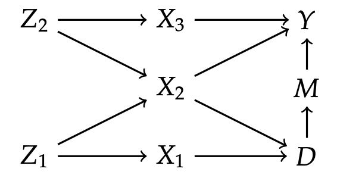

Chapter 13 Dosearch for Causal Identification in DAGs
This a simple notebook for teaching that illustrates capabilites of the dosearch package, which is a great tool.
NB. In my experience, the commands are sensitive to syntax ( e.g. spacing when \(\to\) are used), so be careful when changing to other examples.
library(dosearch)## Warning: package 'dosearch' was built under R version 4.0.5
We start with the simplest graph, with the simplest example where \(D\) is policy, \(Y\) is outcomes, \(X\) is a confounder: \[ D\to Y, \quad X \to (D,Y) \] Now suppose we want conditional average policy effect.
data <- "p(y,d,x)" #data structure
query <- "p(y | do(d),x)" #query -- target parameter
graph <- "x -> y
x -> d
d -> y"
dosearch(data, query, graph)## p(y|d,x)
This recovers the correct identification formula for law of the counterfactual \(Y(d)\) induced by \(do(D=d)\): \[ p_{Y(d)|X}(y|x) := p(y|do(d),x) = p(y|d,x). \]
data <- "p(y,d,x)"
query <- "p(y | do(d))"
graph <- "x -> y
x -> d
d -> y"
dosearch(data, query, graph)## \sum_{x}\left(p(x)p(y|d,x)\right)
This recovers the correct identification formula: \[ p_{Y(d)}(y) := p(y: do(d)) = \sum_{x}\left(p(x)p(y|d,x)\right) \] We integrate out \(x\) in the previous formula.
Suppose we don’t observe the confounder. The effect is generally not identified.
data <- "p(y,d)"
query <- "p(y | do(d))"
graph <- "x -> y
x -> d
d -> y"
dosearch(data, query, graph)## The query p(y | do(d)) is non-identifiable.
The next graph is an example of J. Pearl (different notation), where the graph is considerably more complicated. We are interested in \(D \to Y\).

Here we try conditioning on \(X_2\). This would block one backdoor path from \(D\) to \(Y\), but would open another path on which \(X_2\) is a collider, so this shouldn’t work. The application below gave a correct answer (after I put the spacings carefully).
data <- "p(y,d,x2)" #observed only (Y, D, X_2)
query<- "p(y|do(d))" #target parameter
graph<- "z1 -> x1
z1 -> x2
z2 -> x2
z2 -> x3
x2 -> d
x2 -> y
x3 -> y
x1 -> d
d -> m
m -> y
"
dosearch(data, query, graph)## The query p(y|do(d)) is non-identifiable.
Intuitively, we should add more common causes. For example, adding \(X_3\) and using \(S = (X_2, X_3)\) should work.
data <- "p(y,d,x2,x3)"
conditional.query<- "p(y|do(d),x2, x3)" #can ID conditional average effect?
query<- "p(y|do(d))" #can ID unconditional effect?
graph<- "z1 -> x1
z1 -> x2
z2 -> x2
z2 -> x3
x2 -> d
x2 -> y
x3 -> y
x1 -> d
d -> m
m -> y
"
print(dosearch(data, conditional.query, graph))## p(y|x2,x3,d)print(dosearch(data, query, graph))## \sum_{x2,x3}\left(p(x2,x3)p(y|x2,x3,d)\right)
This retrives correct formulas for counterfactual distributions of \(Y(d)\) induced by \(Do(D=d)\):
The conditional distribution is identified by: \[ p_{Y(d) \mid X_2, X_3}(y) := p(y |x_2, x_3: do(d)) = p(y|x_2,x_3,d). \]
The unconditional distribution is obtained by integration out \(x_2\) and \(x_3\):
\[ p_{Y(d) }(y) := p(y do(d)) = \sum_{x2,x3}\left(p(x_2,x_3)p(y|x_2,x_3,d)\right). \]
Next we suppose that we observe only \((Y,D, M)\). Can we identify the effect \(D \to Y\)? Can we use back-door-criterion twice to get \(D \to M\) and \(M \to Y\) affect? Yes, that’s called front-door criterion – so we just need to remember only the back-door and the fact that we can use it iteratively.
data <- "p(y,d, m)"
query.dm<- "p(m|do(d))"
query.md<- "p(y|do(m))"
query<- "p(y|do(d))"
graph<- "z1 -> x1
z1 -> x2
z2 -> x2
z2 -> x3
x2 -> d
x2 -> y
x3 -> y
x1 -> d
d -> m
m -> y
"
print(dosearch(data, query.dm, graph))## p(m|d)print(dosearch(data, query.md, graph))## \sum_{d}\left(p(d)p(y|d,m)\right)print(dosearch(data, query, graph))## \sum_{m}\left(p(m|d)\sum_{d}\left(p(d)p(y|d,m)\right)\right)
So we get identification results: First, \[ p_{M(d)}(m) := p(m|do(d)) = p(m|d). \] Second, \[ p_{Y(m)}(y) := p(y|do(m)) = \sum_{d}\left(p(d)p(y|d,m)\right), \] and the last by integrating the product of these two formulas: \[ p_{Y(d)}(y) := p(y|do(d)) = \sum_{m}\left(p(m|d)\sum_{d}\left(p(d)p(y|d,m)\right)\right) \]
The package is very rich and allows identification analysis, when the data comes from multiple sources. Suppose we observe marginal distributions \((Y,D)\) and \((D,M)\) only. Can we identify the effect of \(D \to Y\). The answer is (guess) and the package correctly recovers it.
data <- "p(y,m)
p(m,d)"
query.dm<- "p(m|do(d))"
query.md<- "p(y|do(m))"
query<- "p(y|do(d))"
graph<- "z1 -> x1
z1 -> x2
z2 -> x2
z2 -> x3
x2 -> d
x2 -> y
x3 -> y
x1 -> d
d -> m
m -> y
"
print(dosearch(data, query.dm, graph))## p(m|d)print(dosearch(data, query.md, graph))## The query p(y|do(m)) is non-identifiable.print(dosearch(data, query, graph))## The query p(y|do(d)) is non-identifiable.